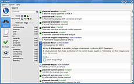
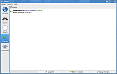
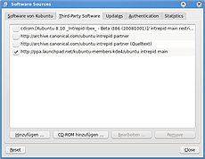

Adept 3
Archivierte Anleitung
Dieser Artikel wurde archiviert, da er - oder Teile daraus - nur noch unter einer älteren Ubuntu-Version nutzbar ist. Diese Anleitung wird vom Wiki-Team weder auf Richtigkeit überprüft noch anderweitig gepflegt. Zusätzlich wurde der Artikel für weitere Änderungen gesperrt.
Anmerkung: Dieser Artikel ist veraltet, eine Alternative ist der Artikel Softwareverwaltung KDE
Hinweis:
Dieser Artikel beschreibt das Programm Adept Manager, dessen Entwicklung eingestellt  wurde. An seine Stelle tritt ab Ubuntu 9.04 Jaunty Jackalope die Softwareverwaltung KDE.
wurde. An seine Stelle tritt ab Ubuntu 9.04 Jaunty Jackalope die Softwareverwaltung KDE.
 Adept ist ein Programm zur Paketverwaltung unter Kubuntu. Es bietet eine grafische Oberfläche für APT, mit der Aufgabe die Paketverwaltung komfortabel zu gestalten. Um
Adept ist ein Programm zur Paketverwaltung unter Kubuntu. Es bietet eine grafische Oberfläche für APT, mit der Aufgabe die Paketverwaltung komfortabel zu gestalten. Um
adept (universe)
 mit apturl
mit apturl
Paketliste zum Kopieren:
sudo apt-get install adept
sudo aptitude install adept
nutzen zu können, muss es zuerst aus den offiziellen Paketquellen installiert werden, da es nicht mehr in der Standardinstallation von Kubuntu enthalten ist. Für Anwender die regelmäßig seit Kubuntu 8.10 Intrepid Ibex mit einem Distributionsupdate auf eine neuere Kubuntu Version gefolgt sind, entfällt dieser Schritt. Anschließend befindet sich Adept im K-Menü unter:
"System -> Adept (Package Manager)"
Zum Start muss das Passwort eingegeben werden. So wird die unbefugte oder unbeabsichtigte Installation oder Deinstallation von Programmen verhindert.
Suche von Programmen¶

Nach dem Start von Adept findet man sich im Menüpunkt Search wieder. Auf der linken Seite befindet sich ein Eingabefeld, in das der Name bzw ein Stichwort des zu installierenden Programms eingegeben wird. Auf der rechten Seite erscheint eine Liste mit allen Treffern der Suche. Jederzeit kann man sich weitere Informationen über ein Paket anzeigen lassen. Dazu markiert man ein Paket und klickt anschließend auf das Details-Menü am linken Rand.
Um die Suche zu verfeinern kann folgende Symbolik verwendet werden. Dazu müssen die entsprechenden Symbole nur angeklickt werden und das Suchergebnis ändert sich entsprechend:
| Symbolik | ||
| Zeigt verfügbare (nicht installierte) Pakete an | ||
| Zeigt installierte Pakete an | ||
| Zeigt Pakete an, die aktualisiert werden können | ||
| Zeigt Pakete an, die nicht verändert werden sollen (entfernen, aktualisieren, ... | ||
| Zeigt Pakete an, die für die Installation vorgemerkt worden sind | ||
| Zeigt Pakete an, die zum Entfernen vorgemerkt worden sind | ||
| Zeigt Pakete an, die aktualisiert werden sollen | ||
Installation¶
Ist das gesuchte Programm in dieser Liste, so klickt man es an und markiert es damit. Eine erweiterte Beschreibung öffnet sich. Möchte man diese Anwendung nun installieren so setzt man einen Haken bei Install this package und merkt damit die Installation vor.
Entfernen¶
Möchte man ein Programm entfernen, so sucht man wieder im Search-Menü danach, bzw benutzt die Symbolik. Hat man die entsprechende Anwendung gefunden, so klickt man auf sie und setzt einen Haken, um sie für die Deinstallation vorzumerken.
Dateien in den Homeverzeichnissen der Benutzer bleiben davon natürlich unberührt. Die Paketverwaltung wird nie Daten aus dem Home-Verzeichnis löschen!

Anwenden¶
Möchte man die vorgemerkten Programme nun installieren bzw entfernen, so wechselt man in das Changes-Menü. Dort kann man sich vergewissern, welche Programme und evtl. deren Abhängigkeiten installiert bzw entfernt werden. Nach einem Klick auf Apply Changes wird der Vorgang gestartet. Möchte man doch keine Änderungen vornehmen, so ist dies über Revert Changes möglich.
Paketquellenverwaltung¶

Auch die Paketquellen können grafisch mit Adept verwaltet werden. Dazu wechselt man in das Sources-Menü und klickt dort auf den Button Edit Software Sources. Über das nun erscheinende Menü können Quellen hinzugefügt bzw. entfernt werden. Auch Einstellungen über automatische Updates und Ähnliches sind möglich.
Allgemeine Informationen zu den Paketquellen findet man hier. Diesen Artikel sollte man sich vor dem Fortfahren durchgelesen haben.
Nachdem man dieses Menü über Exit verlassen hat, werden die Paketquellen neu eingelesen und automatisch aktualisiert.
Möchte man die Paketquellen von Hand einlesen, z. B. um nachzusehen ob Updates verfügbar sind, so ist dies über den Button Fetch current Package lists möglich. Wurden Updates gefunden, so wechselt Adept automatisch in den Changes-Menüpunkt, in dem die Änderungen mittels Upgrade angewendet werden können.
Probleme¶
Derzeit (Stand von Ende Oktober 2008) gibt es Probleme bei der Suche nach Programmen. Manchmal werden Ergebnisse nicht angezeigt, obwohl diese vorhanden sind. Als Workaround kann folgender Befehl benutzt werden:
sudo update-apt-xapian-index
Dieser Befehl muss nach jedem Hinzufügen/Entfernen von Paketquellen einmalig durchgeführt werden.
- Erstellt mit Inyoka
-
 2004 – 2017 ubuntuusers.de • Einige Rechte vorbehalten
2004 – 2017 ubuntuusers.de • Einige Rechte vorbehalten
Lizenz • Kontakt • Datenschutz • Impressum • Serverstatus -
Serverhousing gespendet von